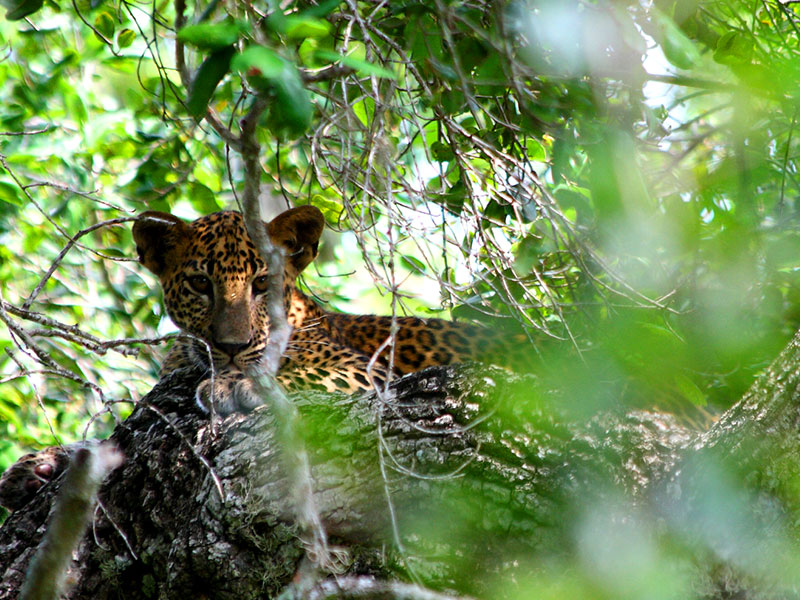
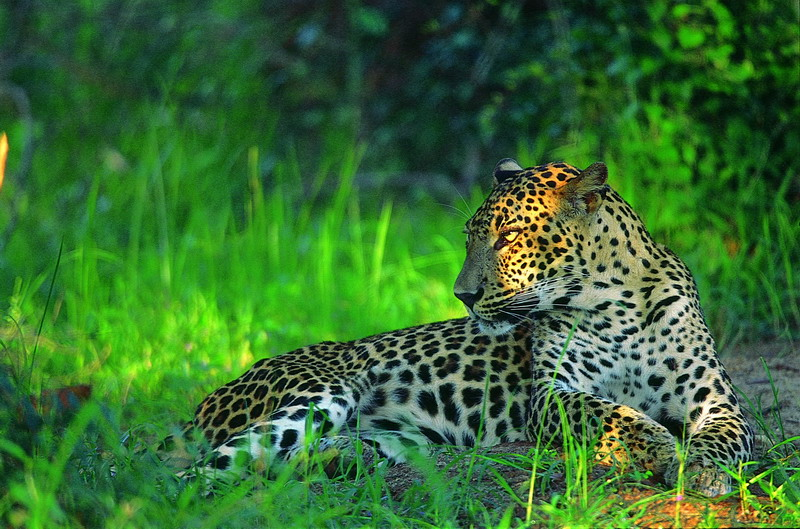
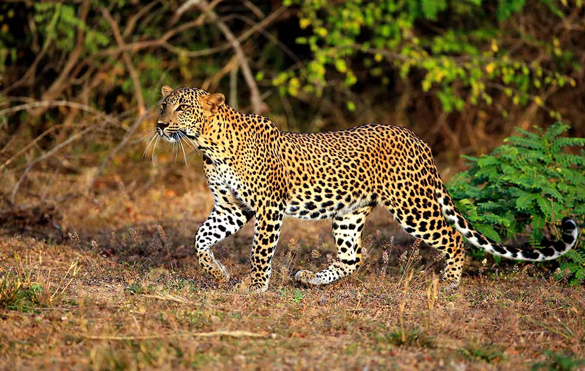
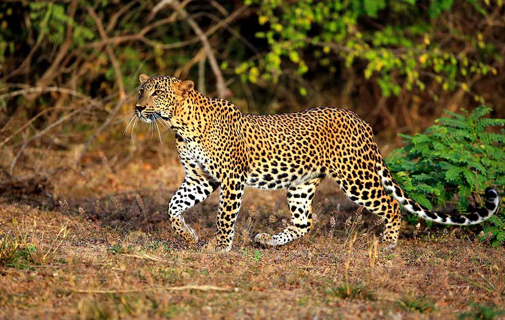

Venues where Sri Lankan Leopards are Found
Udawalawe National Park
Udawalawe National Park, located in the southern part of Sri Lanka, is renowned for its extensive grasslands, scrub jungles, and the Udawalawe Reservoir, creating an ideal habitat for a range of wildlife.Udawalawe is home to a population of Sri Lankan leopards (Panthera pardus kotiya), and while sightings are less common compared to parks like Yala, the park provides a chance to encounter these elusive predators.
Visitors to Udawalawe can embark on safari experiences to explore the park's diverse ecosystems and encounter its resident wildlife. While elephants are the main highlight, the possibility of spotting leopards adds an element of excitement to the safari.


Sinharaja Forest Reserve
Leopards (Panthera pardus kotiya) inhabit Sinharaja, but they are considered elusive and sightings are less common compared to some other national parks. The dense vegetation and challenging terrain make it difficult to spot these stealthy predators.The conservation of Sinharaja Forest is crucial for preserving the habitats of its inhabitants, including leopards. Conservation efforts focus on maintaining the delicate balance of the ecosystem and protecting the many endemic species found in the forest.
 Gal Oya National Park
Leopards inhabit Gal Oya National Park, adding to the park's biodiversity. The presence of water bodies, grasslands, and forested areas contributes to the suitability of the habitat for these elusive big cats.Gal Oya provides a more off-the-beaten-path experience compared to some well-known national parks in Sri Lanka. Visitors can enjoy jeep safaris, boat safaris, and nature walks, immersing themselves in the tranquility of the park and its diverse landscapes.
 
